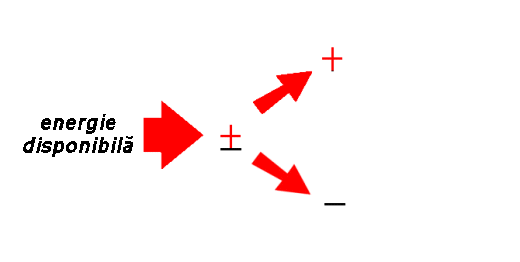
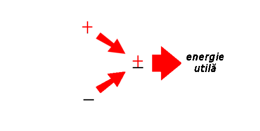
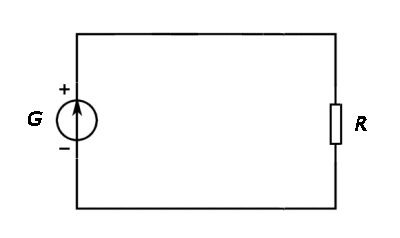
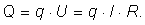
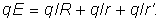
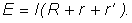
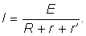
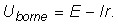
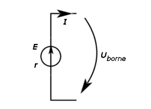
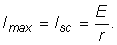

Numim generator electric dispozitivul care transformă o
formă disponibilă de energie în energie de interacţiune a sarcinilor electrice, prin separarea purtătorilor de sarcină de
semne contrare.
Numim generator electric dispozitivul care transformă o
formă disponibilă de energie în energie de interacţiune a sarcinilor electrice, prin separarea purtătorilor de sarcină de
semne contrare.
Producerea şi utilizarea curentului continuu |
Legile circuitelor electrice |
B-3. |
Transferul de energie în circuitele electrice |
Pentru ca să controlăm mediul în care trăim avem nevoie de energie pentru a provoca transformările dorite.
Avem nevoie de energie pentru a produce lumina când este prea întuneric, pentru a încălzi ceea ce este prea rece, pentru a răci ceea ce este prea cald, pentru a mişca ceea ce dorim să se mişte, iar lista ar putea continua...
Arareori găsim sursele de energie acolo unde avem nevoie şi în forma de care avem nevoie. Zăcămintele de cărbune şi căderile de apă - pentru a numi doar două surse majore de energie - sunt adesea foarte departe de locuinţele noastre.
O soluţie de succes, pe care o aplicăm pe scară largă, este să transformăm energia disponibilă în energie de interacţiune dintre sarcinile electrice, prin separarea purtătorilor de sarcină de semne contrare (figura 3−1).

Figura 3-1. O formă disponibilă de energie este transformată în energie de interacţiune între sarcinile
electrice, prin separarea purtătorilor de sarcină de semne contrare.
Numim generator electric dispozitivul care transformă o
formă disponibilă de energie în energie de interacţiune a sarcinilor electrice, prin separarea purtătorilor de sarcină de
semne contrare.
Controlând recombinarea purtătorilor de sarcină de semne contrare, obţinem forma dorită de energie, în locul şi în ritmul de care avem nevoie de aceasta (figura 3−2).

Figura 3-2. Prin recombinarea controlată a purtătorilor de sarcină de semne contrare, obţinem forma dorită
de energie, în locul şi în ritmul în care avem nevoie de aceasta.
Numim consumator electric dispozitivul care transformă energia
de interacţiune a sarcinilor electrice într−o formă utilă de energie, prin recombinarea controlată a purtătorilor de
sarcină de semne contrare.
În circuitul reprezentat în figura 3−3, generatorul electric (notat G) utilizează o formă disponibilă de energie, transformând−o în energie de interacţiune a sarcinilor electrice, prin separarea purtătorilor de sarcină de semne contrare.
|  | Figura 3−3. Schema unui circuit electric cu generator, consumator şi conductoare de legătură. |
Numim tensiune electromotoare a unui generator electric,
tensiunea electrică la care acesta separă sarcinile electrice.
Prin separarea cantităţii de sarcină q de către un generator având t.e.m. E, energia de interacţiune a sarcinilor electrice creşte cu q·E.
În procesul de recombinare, purtătorii de sarcină se ciocnesc cu particulele întâlnite în cale, sporind agitaţia termică - se degajă căldură.
Degajarea de căldură însoţeşte transformarea energiei de interacţiune
a sarcinilor electrice în alte forme de energie.
La trecerea purtătorilor de sarcină printr−un rezistor între capetele căruia tensiunea electrică este U, toată energia eliberată prin recombinarea purtătorilor de sarcină se degajă sub formă de căldură:

În circuitul din figura 3−3, toate elementele de circuit au o anumită rezistenţă electrică: rezistorul are rezistenţa R, conductorii de legătură au rezistenţa cumulată r', iar generatorul electric rezistenţa electrică internă r.
Bilanţul energetic pentru întreg circuitul este, aşadar:

Simplificând factorul comun q, obţinem:

Această relaţie îţi permite să calculezi intensitatea curentului electric care se stabileşte în circuitul din figura 3−3:
|  | (1) |
Relaţia (1) este legea lui Ohm aplicată întregului circuit.
 Activitatea experimentală 3-1
Activitatea experimentală 3-1
Determină t.e.m. şi rezistenţa internă a unei baterii. Lucrează în echipă.
Pasul 1. Conectaţi la bornele bateriei un rezistor cu rezistenţa electrică 10 Ω. Măsuraţi tensiunea la bornele rezistorului cu un multimetru setat ca voltmetru.
Pasul 2. Calculaţi intensitatea curentului prin circuit, aplicând legea lui Ohm pentru rezistor, neglijând rezistenţa electrică a conductoarelor de legătură.
Pasul 3. Repetaţi paşii anteriori, pentru un rezistor cu rezistenţa electrică 20 Ω.
Pasul 4. Determinaţi t.e.m. a bateriei şi rezistenţa sa internă, aplicând pentru fiecare dintre cele două cazuri legea lui Ohm pentru întreg circuitul.
Pasul 5. Conectaţi doar voltmetrul la bornele bateriei. Comparaţi tensiunea indicată de voltmetru cu rezultatul obţinut pentru t.e.m. a bateriei.
Prin construcţie, voltmetrele au o rezistenţă internă foarte mare. Când voltmetrul este conectat la bornele bateriei, intnsitatea curentului prin circuit este atât de mică, încât tensiunea indicată de voltmetru este, practic, t.e.m. a bateriei.
Atunci când generatorul este străbătut de un curent cu intensitate semnificativă, tensiunea la bornele acestuia este diferită de tensiunea sa electromotoare (figura 3−4):

|  | Figura 3−4. Tensiunea la bornele unui generator străbătut de curent. |
 Provocarea 3-1
Provocarea 3-1
Cât te aştepţi să fie intensitatea maximă a curentului debitat de un generator cu t.e.m. E şi rezistenţa internă r?
Tensiunea la bornele unui generator scade pe măsură ce creşte intensitatea curentului debitat. Astfel, când rezistenţa conectată la bornele generatorului este practic nulă (scurtcircuit), curentul debitat este maxim, iar tensiunea la borne este nulă. Intensitatea maximă a curentului debitat se obţine, aşadar, în regim de scurtcircuit:

În regim de scurtcircuit, toată energia eliberată prin recombinarea sarcinilor se degajă sub formă de căldură în interiorul generatorului. Încălzirea excesivă a generatorului poate conduce la deteriorarea acestuia. De aceea, regimul de scurtcircuit trebuie evitat!